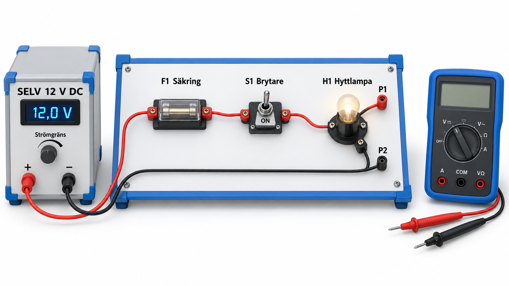

Multimeter · enkelt förklarat
Vad betyder orden på mätaren?
En multimeter är flera mätare i samma instrument. Med vredet väljer du vad du vill mäta. Här förklaras orden med vår 12 V-rigg för hyttbelysning som exempel.
Ladda ner presentationen · version 6
Korta spänningstoppar – vad är det?
Spänningen kan öka mycket under ett mycket kort ögonblick, till exempel när en motor kopplas från. Den snabba ökningen kallas en spänningstopp. I tekniska texter kan det stå transient.
En topp kan vara för snabb för att synas på skärmen men ändå belasta mätarens skydd. Det är detta som menas med ”transientpåfrestning”.
CAT-märkningen visar vilken sorts elmiljö mätaren är provad för, bland annat vilka spänningstoppar den ska tåla. Läs alltid både CAT-kategorin och voltalet. Även mätsladdarna måste klara kravet. Ett högt voltal ersätter inte rätt CAT-kategori.
I kursen övar vi på vår 12 V-rigg. Val av mätare för en verklig elanläggning ombord görs efter mätpunkten, riskbedömningen och mätarens manual.
Skärmen, sladdarna och inställningen
- Display och prober
Display är skärmen där värdet visas. Prober är mätspetsarna längst ut på sladdarna.
- COM
Uttaget för den svarta sladden. Det är mätarens jämförelsepunkt. När du mäter spänning jämför mätaren punkten vid röd spets med punkten vid svart spets. COM betyder inte automatiskt jord eller fartygsskrov.
- DC och AC
DC används för likspänning, som från riggens 12 V-källa. AC används för växelspänning, där spänningen växlar riktning. Välj rätt läge innan du mäter.
- Mätområde och autorange
Mätområdet är det spann mätaren kan visa i den valda inställningen. Autorange väljer området automatiskt. Du måste fortfarande välja rätt funktion, till exempel DC-spänning, och rätt uttag för sladdarna.
- OL
Värdet ryms inte i mätområdet. När du mäter motstånd kan OL betyda mycket stort motstånd eller en bruten strömväg. Betydelsen beror på mätläget – kontrollera manualen.
Vad är det vi mäter?
- Spänning · V
Skillnaden mellan två punkter, mätt i volt. För att mäta spänningen över hyttlampan sätter du en mätspets på varje sida om lampan. Mätaren kopplas då parallellt med lampan.
- Ström · A
Hur mycket elektrisk laddning som passerar varje sekund, mätt i ampere. Vid strömmätning måste strömmen gå genom mätaren. Den kopplas i serie, som en del av lampans strömväg. Koppla bort matningen före omkoppling. Följ presentationens arbetsgång och mätarens manual.
- Resistans · Ω
Elektriskt motstånd, mätt i ohm. Vid samma spänning ger större motstånd mindre ström. Mät motstånd bara när matningen är bortkopplad, spänningen är kontrollerad och eventuell lagrad energi är säkert urladdad.
- Kontinuitet · pipfunktionen
Mätaren kontrollerar om det finns en strömväg med litet motstånd och kan då pipa. Vi använder den till exempel för att kontrollera en uttagen säkring. Ett pip bevisar inte att en ledning klarar lampans vanliga ström.
- Last och belastning
En last är något som tar elektrisk energi, till exempel hyttlampan eller en pump. När lampan är tänd belastar den matningen: den tar ström.
- Frånskild och urladdad
Frånskild betyder att matningen är bortkopplad på ett säkert sätt. Urladdad betyder att lagrad elektrisk energi har tagits bort säkert. Vissa komponenter kan lagra energi även efter att matningen har kopplats bort.
- SELV i vår övningsrigg
Riggen använder mycket låg spänning, 12 V, med skyddande avskiljning från högre spänning och jord. Returledningen går till källan. Den kopplas inte till fartygsskrovet. Läraren kontrollerar riggen före övningen.

Hur säkert är mätvärdet?
- Upplösning
Det minsta steget på skärmen. Om visningen kan ändras från 12,00 till 12,01 V är steget 0,01 V. Många decimaler betyder inte automatiskt att mätaren visar nära det riktiga värdet.
- Felgräns och specifikation
Felgränsen anger hur mycket visningen högst får avvika enligt tillverkarens uppgifter, när manualens villkor är uppfyllda. Specifikation är ett annat ord för dessa tekniska uppgifter. Tecknet ± betyder att felet kan gå åt båda håll: värdet kan vara lägre eller högre än visningen.
- Ingångsresistans
Det elektriska motståndet inne i mätaren sett från mätspetsarna. Även när du mäter spänning tar mätaren en liten ström. I en känslig givarkrets kan det ändra den spänning du försöker mäta.
Fortsätt med bilderna och övningarna i presentationen eller de svenska filmklippen.